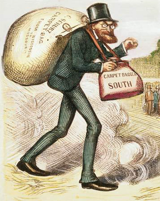
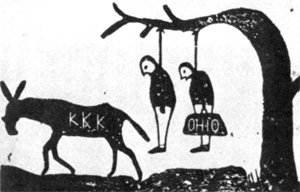

|
Carpetbaggers were northerners who either moved to the South or remained in
the South after the Civil War. They were one segment of the Southern Republican
coalition that also included scalawags and African-Americans. The carpetbaggers
comprised only 16% of this coalition, but they dominated Republican politics in
the region. As such, they bore primary responsibility for dealing with the
practical problems of reconstructing the South. Republican leaders also hoped
that carpetbaggers could help to build a permanent presence for the Republican
Party in southern politics.
The motivations of the carpetbaggers were diverse. Some had humanitarian
motives, and wanted to help the former slaves make the transition to freedom.
|

Southern depictions of carpetbaggers,
such as this cartoon of Carl Schurz, were invariably unflattering.
|
This was certainly the case with Republican Adelbert Ames from Maine. A
distinguished Union officer, Ames was the Reconstruction governor and U.S.
Senator from Mississippi who struggled mightily to help the freedpeople of his
adopted state. Other carpetbaggers wanted to help bind the nation's wounds, and
to facilitate political and economic cooperation between North and South. Still
others sensed that the postwar South offered excellent political and economic
opportunities.
The carpetbaggers and their Republican allies faced a number of significant
obstacles in achieving their goals, however. First, the Republican governments
lacked the power to make permanent changes in southern life. Their hold on
office was tenuous at best, and even in the best of circumstances it is
difficult for governments to render significant social, economic and political
change in a short period of time. An even greater issue was that the Republican
coalition depended on black votes and military rule. White southerners hated the
carpetbaggers for this. Indeed, it was white southerners who created the term
carpetbagger, based on a stereotype of carpetbaggers as individuals who had
carried their belongings South in the same cheap carpet suitcases used by
salesmen. White southerners also maintained that carpetbaggers were corrupt, and
were only interested in their own personal financial and political gains.
The southern depiction of the carpetbaggers as unscrupulous schemers has
found its way into many history books. Certainly, there was some truth to this
characterization. There were a number of carpetbaggers who were corrupt, and who
cared little about the needs of their constituents or their party. These
individuals were an exception to the rule, however. Most carpetbaggers did what
they could under difficult circumstances, and they achieved a few successes.
Under the carpetbagger-led governments, a public education system was set up
in every state. This was a major achievement because before the war North
Carolina was the only southern state with a public education system. By 1900,
African-American literacy had climbed above 50%. In addition, Civil Rights
protection was legislated and discrimination was outlawed. The federal Civil
Rights Act of 1866 required that states treat African-Americans equally under
the law; this was followed by anti-discrimination policies passed by Republican
state governments.
As important as the successes of the carpetbagger-led governments were, they
must be balanced against their failures. Carpetbaggers focused heavily on
building internal improvements, particularly railroads. They thought that the
spread of railroads would usher in the "New South", with a modern,
industrialized economy. When it came time to build, however, the railroads were
often poorly planned or poorly executed. Contracts were granted to corrupt
corporations, sometimes in violation of state law. By the time Reconstruction
ended, only 7,000 miles of new railroad track had been laid in the South.
In addition to their belief in the value of railroads, Carpetbaggers also
|

This Northern cartoon suggests that the Ku Klux
Klan and the Democratic Party (symbolized by a donkey) are working
together to intimidate and undermine carpetbaggers with violence.
|
came south looking to redistribute southern land. This was another area in which
the Republicans largely failed. With the exception of creating the South
Carolina land commission in 1868, nothing was ever done to grant land to the
freedmen. As such, virtually all African-Americans were forced to work as
laborers during Reconstruction. Eventually, this evolved into sharecropping,
which trapped African Americans in poverty.
Ultimately, then, the Carpetbaggers had a mixed record. They were able to
expand educational opportunities for freedmen, and also to help secure the
passage of important civil rights legislation on the state level. Meanwhile,
they made little progress in building internal improvements, and in providing
land for the freedmen. The Carpetbaggers also failed in their larger goal of
establishing a unified, politically viable Republican coalition in the South.
The era of Reconstruction left most white southerners with a deep and abiding
resentment of the Republicans, which laid the groundwork for the "Redemption" of
the South by white Democratic politicians. With the demise of the carpetbaggers
and scalawags, and the curtailing of African-Americans' voting rights, the
Republican party would not again have a meaningful presence in the South for
nearly a century.
Source: Joan Waugh, ed., Facts on File Encyclopedia of American
History: Civil War and Reconstruction, 1856 to 1869 (New York: Facts on
File, 2003), 49-51.
|